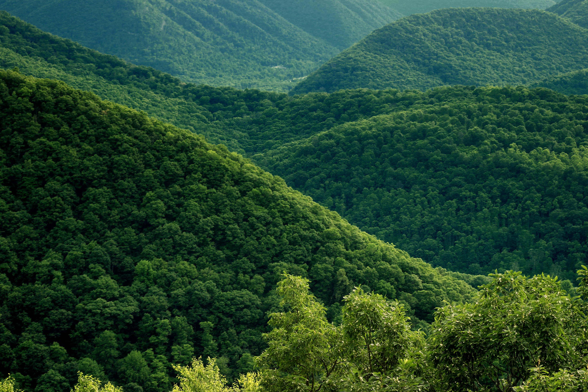

Environment, Sustains all life through its intricate ecosystems.
Wildlife, Essential for maintaining ecological balance.
Why Nature Needs Our Rescue?

Nature, with its majestic mountains, lush forests, and vast oceans, is in danger.
Human activities have caused pollution, deforestation, and climate change,
disrupting the delicate balance of our planet. Mountains are eroding, forests are vanishing, and oceans are suffocating.
Saving nature is vital for our survival. Every action we take to reduce our carbon footprint helps heal our planet.
We must act now to ensure these natural wonders endure for future generations. Nature needs our rescue, and in saving it, we save ourselves.
How to Rescue Nature?
The current volunteer situation in nature conservation is vibrant and dynamic, driven by a growing awareness of environmental issues and the need for sustainable practices. Volunteers are engaged in a wide range of activities, from habitat restoration and wildlife monitoring to beach cleanups and tree planting. Organizations and community groups are increasingly leveraging social media and online platforms to recruit and coordinate volunteers, making it easier for individuals to contribute. Additionally, there is a rise in citizen science projects, where volunteers collect data to support scientific research. Despite these positive trends, challenges such as funding, training, and the need for long-term commitment remain.